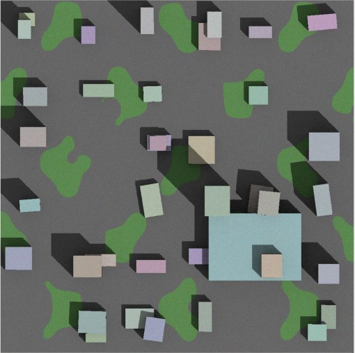
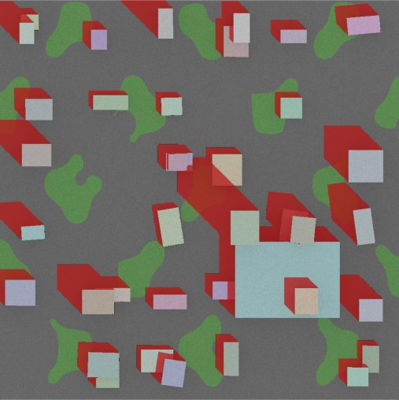
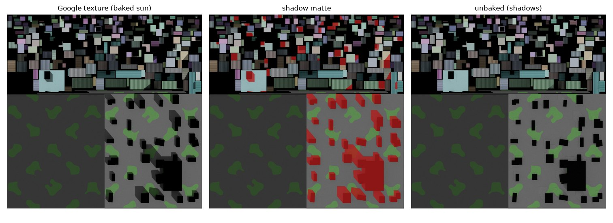
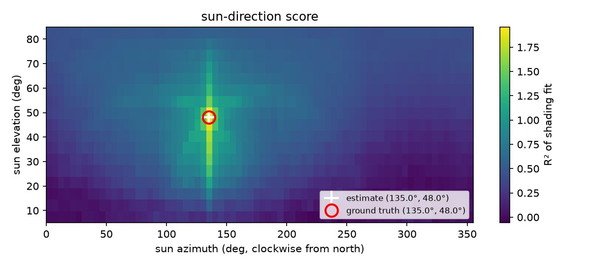

Inverse rendering · 2026 · Ongoing
Photorealistic 3D city scans are frozen at one moment: the sun of the day they were captured is painted into every texture. This project works out where that sun was, using only the mesh and the texture, and then removes its shadows so the city can be lit by any sun you choose.


Recovered shadow Baked textureDrag to compare. Right: the baked aerial texture. Left: cast shadows predicted from the recovered sun (135.0°, 48.0°), which match the ground truth exactly.
Google's Photorealistic 3D Tiles and similar photogrammetric meshes are now everywhere in simulation, games and digital twins. But their textures are photographs, so every building carries the shadow it cast on capture day. Put a new sun in the scene and you get two sets of shadows that disagree.
For every texel of every texture atlas, I rasterise its 3D position and surface normal. For each candidate sun direction, I ray-cast the whole scene to find which texels would be in shadow, and score how well that explains the texture with two tests:
A coarse-to-fine search (5° → 1° → 0.25°) over about 1,500 directions and 120k rays each finds the sun. The pipeline then exports per-texel shadow masks, shading and ambient occlusion that condition a learned de-shadowing model.


On five procedural cities with known suns, run through the same GLB round trip as real tiles:
Paired synthetic training data from Blender, a conditioned de-shadowing network, and writing the results back into 3D Tiles for Cesium for Unreal. The first real-world test is the Texas A&M campus.